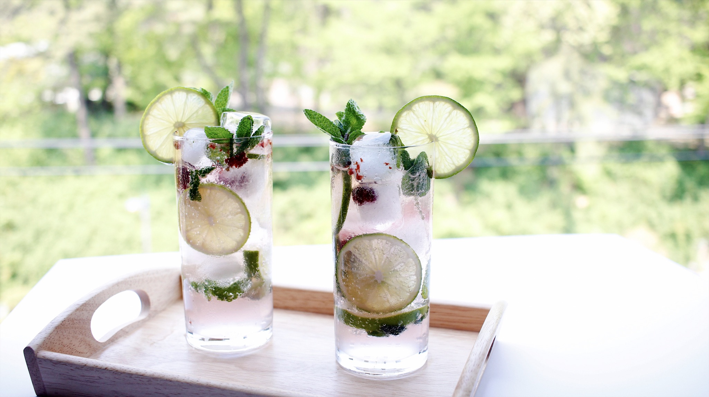

별거 없지만 있어 보이는 푸드 스타일링 따라 하기.
/
모히또
-
모히또 가서 몰디브 한 잔?
2015년 <내부자들>에서 나온 이병헌의 유명한 대사입니다.
이 대사가 유행하면서 모히또도 같이 인기가 많아졌습니다.
만드는 방법이 어렵지도 않은데 맛있고 쉽게 접할 수 있는 칵테일이기도 합니다.
그러면 모히또를 더 맛있고 예쁘게 만드는 방법을 알려드리겠습니다.
-
Recipe
- 라임은 반으로 잘라 즙을 짜줍니다.
- 컵에 8등분 한 라임 2쪽, 산딸기 5~6개, 애플 민트 5장을 넣어 으깨줍니다.
- 으깬 컵에 라임즙 2스푼과 청포도 소주 1잔을 부어줍니다.
- 컵에 얼음을 넣어 줍니다.
- 사이다를 컵에 가득 붓고 한번 섞어줍니다.
- 슬라이스 한 라임과 민트를 컵에 꽂아주면 완성!
재료
모히또 2잔 분량
라임 1개, 애플민트 10장, 산딸기 12개, 청포도 소주 2잔, 사이다 400ml, 얼음 적당량
모히또의 픽은 바로 산딸기입니다.
요즘 한창 제철이기도 하고 모양도 예쁘고 맛도 좋답니다.
산딸기를 넣어야 색이 핑크빛도 돌고 맛도 더 상큼합니다.
으깰 때, 찧듯이 하면 컵이 깨질지도 모르니 짓누르 듯이 으깨주시면 됩니다.
그냥 소주도 좋지만 청포도 소주를 사용하면 향이 더욱 좋아집니다.
술을 못 드시는 분은 생략하면 무알콜 모히또가 됩니다.
얼음으로 밑에 으깬 것들을 눌러줘야 깔끔한 모히또가 완성됩니다.
슬라이스 한 라임을 1/2까지 잘라주면 컵에 쉽게 꽂을 수 있습니다.
-
이번엔 특별히 레시피의 이해를 돕기 위해 동영상을 첨부합니다 :)
-
Styling
- 모히또의 청량감을 살려주자.
- 모히또를 더 예쁘게 만드는 팁.
- 투명한 음료는 역광으로 촬영하기.
모히또 같은 음료는 꼭 투명하고 긴 컵에 담아 음료 안을 보여줘야 합니다.
또한 패브릭을 사용한다면 시원해 보이는 스트라이프 무늬 같은 것이 좋겠죠?
얼음을 만들 때 산딸기나 민트를 넣어주면 보기에도 예쁘고
맛도 좋은 얼음이 완성된 답니다.
얼음을 넣고 난 후, 슬라이스 한 라임을 컵의 벽에 붙여주면
라임도 더 돋보이고 청량해 보여요.
모히또의 경우엔 특별히 창가에서 촬영해 봤습니다.
뒤의 초록 초록한 나무들이 모히또와 잘 어울리는 것 같아서 말이죠.
카페라떼같이 텁텁한 음료와 달리 모히또처럼 투명한 음료는
촬영할 때 역광으로 촬영해야 컵 안의 내용물이 투명하게 잘 나옵니다.
*역광이란? 빛이 뒤에서 비추는 것.
-
무더운 여름, 모히또를 보기만 해도 시원해지는 것 같지 않나요?
요즘처럼 더운 날 한잔 마시면 갈증이 해소된답니다.
만드는 방법도 간단하니 집에서 꼭 따라 만들어 보세요.
라임과 애플민트가 아니더라도 좋아하는 과일과 다양한 민트를 이용해 자신만의 모히또를 만들어 보세요!